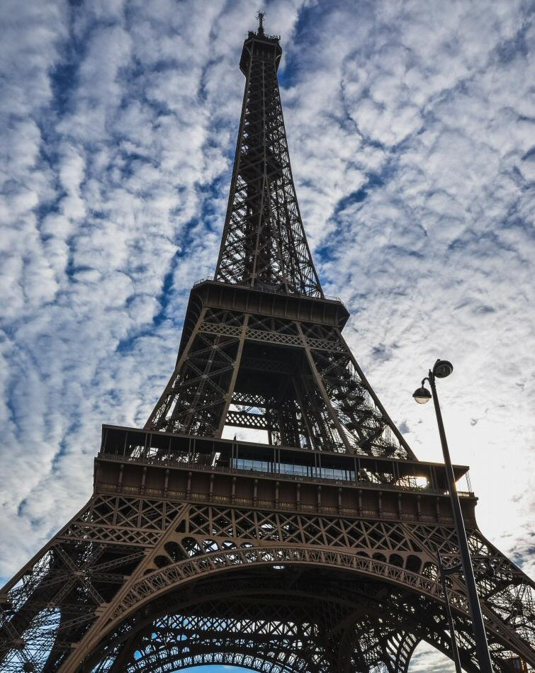
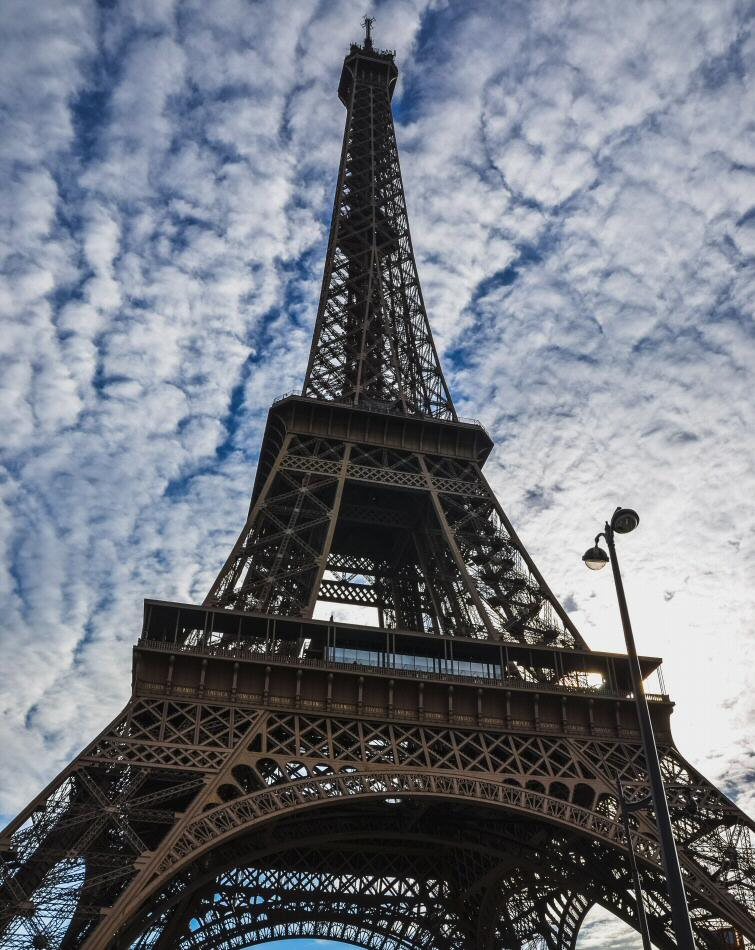
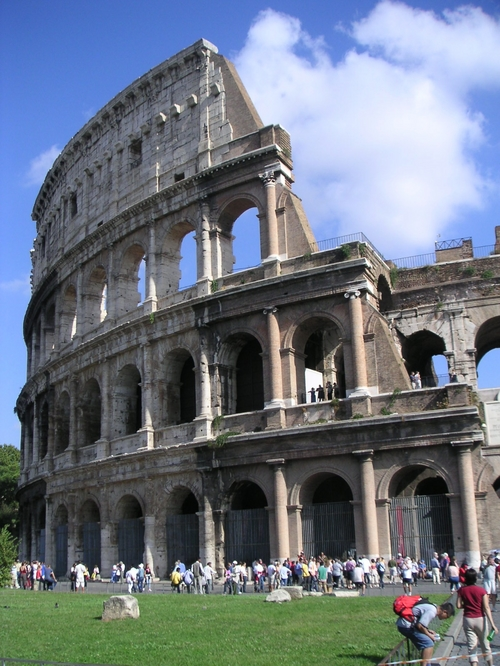
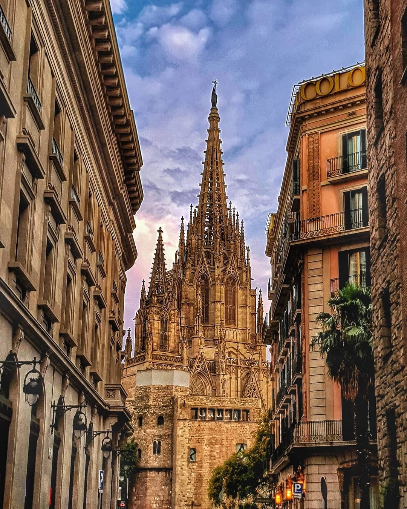
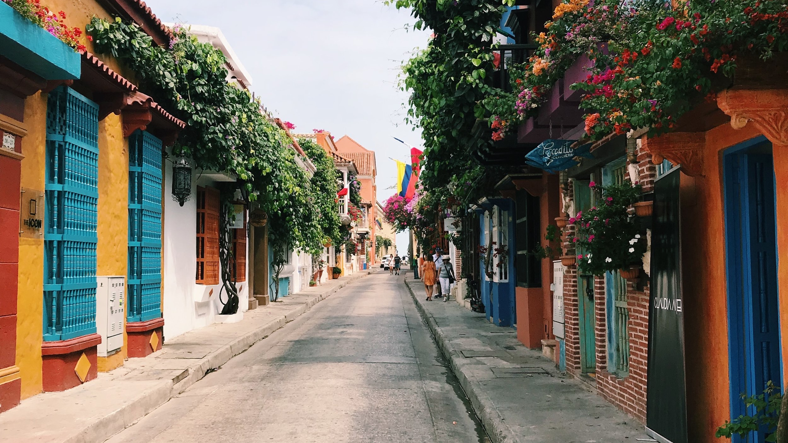
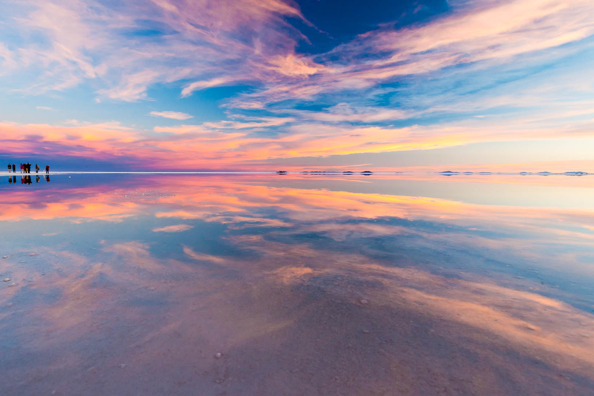

Explorar cidades como Paris é como entrar em um livro de história vivo.
Como folhear um romance antigo e elegante- cada esquina sussura arte, amor e poesia.
Viajar é mais do que se deslocar — é viver histórias, colecionar memórias e se transformar a cada nova paisagem. Nesta seção do blog, compartilho os lugares que marcaram minha jornada pelo mundo. De cidades históricas a cenários naturais de tirar o fôlego, aqui você encontra dicas, curiosidades e experiências únicas em cada destino.
Prepare seu passaporte, abra o coração e venha explorar comigo os encantos da Europa, os contrastes da Ásia, as cores da América e muito mais. Cada lugar tem algo especial para contar — e esse espaço é todo dedicado a descobri-los juntos. ✈️🌎💫
A charmosa Europa, onde cada cidade parece saída de um conto de fadas.
Explorar cidades como Paris é como entrar em um livro de história vivo.
Como folhear um romance antigo e elegante- cada esquina sussura arte, amor e poesia.
Conheça Roma e seus monumentos impressionantes como o Coliseu e o Vaticano.
Caminhando entre pedras e colunas, é como estar entre deuses antigos e eternos.
Barcelona é uma explosão de cores, sabores e formas - onde Gaudí transformou a cidade em arte.
Barcelona vibra com arte e cor - onde cada batida do flamenco ecoa pelas ruas.
Viajar pela Europa é como folhear um livro de histórias vivas, onde cada cidade é uma página repleta de cultura, arte e sabores únicos. Recentemente, tive a oportunidade de fazer uma jornada por três destinos incríveis: Paris, Roma Barcelona. Cada uma dessas cidades me encantou de um jeito especial — e agora compartilho aqui um pouco dessa experiência inesquecível.
Paris: a cidade-luz que brilha em cada detalhe
Comecei a viagem por Paris, a capital francesa que é sinônimo de charme e elegância. Caminhar pelas margens do Sena, cruzar as pontes históricas e avistar a Torre Eiffel ao fundo é algo que emociona mesmo quem já viu mil fotos. Um dos meus momentos favoritos foi o pôr do sol visto do alto de Montmartre, com artistas de rua, música francesa ao vivo e uma vista de tirar o fôlego.
Além dos pontos turísticos clássicos como o Louvre e a Catedral de Notre-Dame, Paris me conquistou pelos cafés aconchegantes, pelas vitrines de padarias cheias de croissants dourados e, claro, pela atmosfera romântica que está presente em cada esquina.
Roma: onde o passado e o presente se encontram
De Paris, segui para Roma, e o impacto foi imediato. É impossível não se sentir pequeno diante do Coliseu, não se emocionar ao visitar o Vaticano, ou não se perder (no melhor sentido) pelas ruelas de Trastevere. Roma é uma aula de história a céu aberto, mas também é vibrante, viva e cheia de energia.
A gastronomia italiana, então, é um espetáculo à parte. Entre uma visita ao Fórum Romano e um passeio na Fontana di Trevi, saboreei pizzas autênticas, massas artesanais e o melhor tiramisù da minha vida. Roma é para se viver com todos os sentidos.
Barcelona: arte, praia e alegria
A última parada foi Barcelona, na Espanha, e a cidade me surpreendeu com sua mistura de modernidade, tradição e um clima descontraído. Gaudí está em todos os lugares — seja na imponente Sagrada Família, no Parque Güell ou nas formas curiosas de suas obras espalhadas pela cidade.
Além da arquitetura deslumbrante, aproveitei os dias ensolarados para caminhar pela orla de Barceloneta, explorar o bairro Gótico e experimentar tapas deliciosas em bares locais. Barcelona tem uma vibe jovem, criativa e acolhedora, perfeita para fechar a viagem com chave de ouro.
Essa viagem pela Europa foi muito mais do que um simples roteiro turístico. Foi um mergulho em culturas diferentes, sabores marcantes e momentos únicos que ficarão para sempre na memória (e nas fotos!). Se você está planejando uma aventura pelo velho continente, recomendo fortemente incluir essas três cidades — cada uma vai te oferecer uma experiência única e apaixonante.
Fique de olho aqui no blog para mais relatos, dicas e curiosidades de viagem. Até a próxima aventura! 🌍✈️
A fascinante Ásia, um mosaico de culturas, cores e espiritualidade que desperta todos os sentidos.
No Japão, encanta-se com as grandes cidades e com a cultura. Conhecer Kyoto é uma experiência inesquecível.
Na Coreia, Seul é onde o passado e o futuro se encontram - palácios ancenstrais e tecnologia lado a lado.
Na índia, Jaipur, a Cidade Rosa, encanta com seus palácios magníficos, fortalezas majestosas e cultura vibrante.
Viajar pela Ásia é como mergulhar em um universo de tradições milenares, sabores exóticos e paisagens de tirar o fôlego. Em cada cidade, uma nova cultura, uma nova história, uma nova forma de ver o mundo. Nesta jornada inesquecível, explorei três destinos que representam a diversidade e a riqueza do continente asiático: Kyoto, Seul e Jaipur.
Kyoto: tradição e tranquilidade no coração do Japão
Em Kyoto, o tempo parece seguir um ritmo diferente. A cidade respira serenidade, com seus templos antigos, jardins zen e gueixas caminhando pelas ruelas de Gion. Visitar o Templo Kinkaku-ji (Pavilhão Dourado) ao pôr do sol foi um dos momentos mais mágicos da viagem. A arquitetura tradicional, combinada com a delicadeza da cultura japonesa, me fez sentir em um cenário de filme.
A culinária local também é uma experiência à parte — desde o sushi mais fresco até o chá verde mais puro que já experimentei. Kyoto é perfeita para quem busca conexão com a natureza, espiritualidade e arte refinada.
Seul: modernidade pulsante com raízes profundas
Saindo do silêncio dos templos japoneses, cheguei à vibrante Seul, capital da Coreia do Sul. A cidade pulsa energia e inovação, com arranha-céus espelhados, bairros cheios de estilo e uma cena cultural efervescente. Mas o mais surpreendente é como tudo isso convive com palácios reais, mercados tradicionais e rituais antigos.
Passear pelo Palácio Gyeongbokgung vestindo hanbok (traje típico coreano) foi como voltar no tempo, mesmo com os sons da cidade ao fundo. E, claro, não posso deixar de falar da gastronomia coreana — o famoso kimchi, os barbecues e o doce bingsu foram só algumas das delícias que experimentei por lá.
Jaipur: cores, sabores e encantos da ÍndiaFechando a viagem com chave de ouro, fui conhecer Jaipur, a famosa "Cidade Rosa" da Índia. Logo de cara, me encantei com a arquitetura vibrante, os palácios majestosos e o caos fascinante das ruas. Jaipur é um turbilhão de cores, aromas e sensações que conquista até os viajantes mais experientes.
Visitei o Hawa Mahal (Palácio dos Ventos), explorei o forte Amber e me perdi nos mercados de tecidos, joias e especiarias. Cada canto da cidade conta uma história — muitas vezes com dança, música e hospitalidade calorosa.
Descobrir a Ásia foi uma das experiências mais transformadoras da minha vida. Cada destino me ensinou algo novo, me fez sair da zona de conforto e me conectou com culturas riquíssimas. Seja pela paz de Kyoto, a energia de Seul ou a intensidade de Jaipur, essa viagem ficará para sempre no coração — e nas fotos!
Se você está pensando em explorar o Oriente, não pense duas vezes. A Ásia tem muito a oferecer, e essa jornada pode ser o início de uma nova forma de enxergar o mundo. 🌏✨
A exuberante América do Sul, com toda sua beleza e diversidade, vai te deixar sem fôlego!
Paraty é poesia á beira mar - calçadas de pedra, casarões coloniais e um mar que sussura histórias antigas.

A música ecoa das raízes - entre batuques de jongo, cantos caiçaras e acortes de chorinho à beira-mar.
Cartagena vibra em cores, música e calor - uma cidade colonial que transborda charme caribenho.
Cada esquina dança ao som da cumbia e da champeta - onde o ritmo é alma e o sol nunca descansa.
No Salar de Uyuni, céu e terra se fundem num espelho mágico que parece infinito.
O silêncio se torna melodia - interrompido apenas pelo voo de um flamingo ou o sopro do vento.
O continente americano é um mosaico de belezas naturais, cidades históricas e culturas fascinantes. Da América do Sul à América Central, há sempre um destino surpreendente à espera de ser descoberto. Nesta jornada, embarquei por três lugares que me marcaram profundamente: Paraty, Cartagena e Salar de Uyuni. Três cenários distintos, mas igualmente inesquecíveis.
Paraty: um refúgio colonial entre o mar e a serra
No litoral do Rio de Janeiro, Paraty é uma joia brasileira que parece ter parado no tempo. Suas ruas de pedra, casinhas coloridas e igrejas antigas contam histórias do período colonial, enquanto o mar calmo e as montanhas ao fundo criam um cenário digno de cartão-postal.
Caminhar pelo centro histórico é como folhear um livro vivo da história do Brasil. E entre um café charmoso e uma lojinha de artesanato, descobri trilhas, cachoeiras e praias paradisíacas. Paraty é perfeita para quem busca beleza, tranquilidade e cultura em um só lugar.
Cartagena: cores, calor e encanto colombiano
Seguindo para o norte, me apaixonei pela Cartagena das Índias, na Colômbia. Cercada por muralhas e banhada pelo mar do Caribe, a cidade é um espetáculo de cores e alegria. Suas ruas vibrantes, suas varandas floridas e seu povo acolhedor transformam qualquer passeio em uma experiência única.
A cidade respira história: castelos, igrejas e fortalezas contam os tempos da colonização espanhola. E à noite, as praças se enchem de vida com música, dança e sabores irresistíveis da culinária colombiana. Cartagena é apaixonante do início ao fim.
Salar de Uyuni: um deserto branco que desafia os sentidos
Por fim, uma paisagem que parece de outro planeta: o Salar de Uyuni, na Bolívia. O maior deserto de sal do mundo é simplesmente surreal. Durante a estação das chuvas, o salar se transforma em um espelho gigante que reflete o céu, criando a ilusão de caminhar entre as nuvens.
A vastidão branca, o silêncio absoluto e os contrastes de cores fazem desse lugar um dos cenários mais mágicos que já conheci. É o tipo de destino que nos faz sentir pequenos diante da grandeza da natureza — e extremamente gratos por fazer parte dela.
Explorar a América foi uma experiência rica em diversidade e descobertas. Cada lugar visitado revelou um pedaço da alma do nosso continente — suas histórias, suas paisagens e suas pessoas. De Paraty a Cartagena, do mar ao sal, a América pulsa beleza, emoção e aventura.
Se você está planejando sua próxima viagem, considere olhar para mais perto. Às vezes, os destinos mais surpreendentes estão logo aqui, no nosso próprio continente. 📸💫